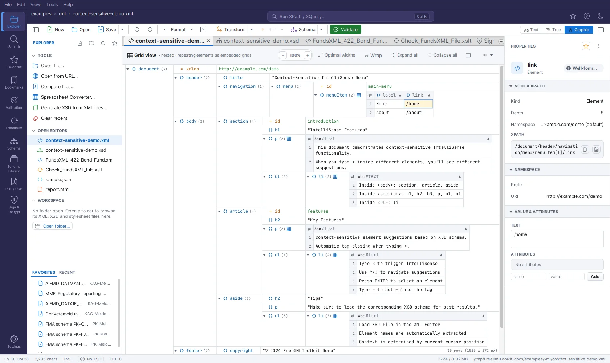

One application for the whole XML workflow
Everything below is included in the free download. Each section links to the full documentation.

One document, three views
Text, Tree and Grid share one undo history, so you switch views without losing your place.
- Context-sensitive IntelliSense from the bound XSD: elements, attributes, enumeration values
- Properties Inspector with type, cardinality, facets and documentation of the node at the caret
- Code folding, syntax highlighting, formatting, bookmarks and search across all views
- JSON, JSON5 and YAML with the same three views and JSON Schema validation
- Templates for new files, Favorites for the files you use often

Design and understand XSD
Edit schemas as a diagram or a tree, and let the Schema Library resolve imports for you.
- Type library, type editor and facet panel, XSD 1.0 and 1.1
- Schema Library with namespace mappings, OASIS catalogs and a schema cache
- Documentation as HTML, PDF or Word
- Schema analysis with statistics and quality checks, export to CSV, JSON, HTML, PDF or Excel
- Sample XML generation and schema flattening

Problems you can act on
Line-precise results while you type, and fixes you apply in one step.
- XSD 1.0 and 1.1 validation, live while you type
- Schematron with Quick Fixes applied as one undo step
- JSON Schema Draft-07, 2019-09 and 2020-12
- DTD and RELAX NG, XML and compact syntax
- Batch validation of whole folders, problems grouped and exported to Excel

From stylesheet to result
Run, preview and debug transformations without leaving the editor.
- XSLT 3.0, XPath 3.1 and XQuery 3.1 with Saxon HE, live preview and parameters; Saxon HE 13.1 as an optional external processor
- XProc 3.0 pipelines with XML Calabash
- Query Console for ad-hoc XPath and XQuery against the open document
- Debugger for XSLT, XQuery and Schematron: conditional breakpoints, logpoints, watches, call stack, coverage
- XSLT and XQuery profiler with hot spots, call tree and flame graph; XSpec tests

PDF, signatures, encryption
Produce documents and protect them with the W3C standards.
- XSL-FO to PDF with Apache FOP, in-app preview and PDF/A-1b
- Sign and verify XML with RSA, RSA-PSS and ECDSA
- Create RSA or EC certificates
- Encrypt and decrypt elements or whole documents with XML Encryption 1.1

Help that is checked first
Off by default. With a local model or a provider you choose, every answer is validated by the application before you see it.
- Explain or fix validation problems from the problem list
- Turn a question into XPath or XQuery
- Generate a stylesheet from a target sample, checked by running it
- Data levels and a preview of every request; no telemetry of prompts or answers
- Administrators can remove the feature
Compare, convert, organise
Compare and merge
- XML-aware compare: structure, namespaces, attribute order, whitespace
- Folder comparison
- Three-way merge
Convert
- XML, JSON and YAML in any direction
- Spreadsheet converter for Excel and CSV import and export
Large files
- Viewer for files of any size, 1 GB opens in seconds
- Search, structure tree, record table
- Streaming validation
Projects
- Schema bindings by file pattern
- Catalogs and named transformation scenarios
- Stored in one .fxtproj file
Plugins
- Activities, menu items, validators and schemas from jar files
- Documented API with a sample project
Industry standards
- FundsXML, ISO 20022 and SEPA
- ebInterface, FinDatEx, XBRL
- FMA and ESMA reporting
The same engines in your pipeline
fxt-cli is installed with the application. It writes text, JSON, JUnit and SARIF reports, and its mcp command gives AI agents the same tools.
Command line referencevalidatetransformqueryxsd-docxspecscenariocomparemergeconvertfopsignverifyencryptdecryptleiisinmcpAll of it, free
No editions, no feature tiers, no account.